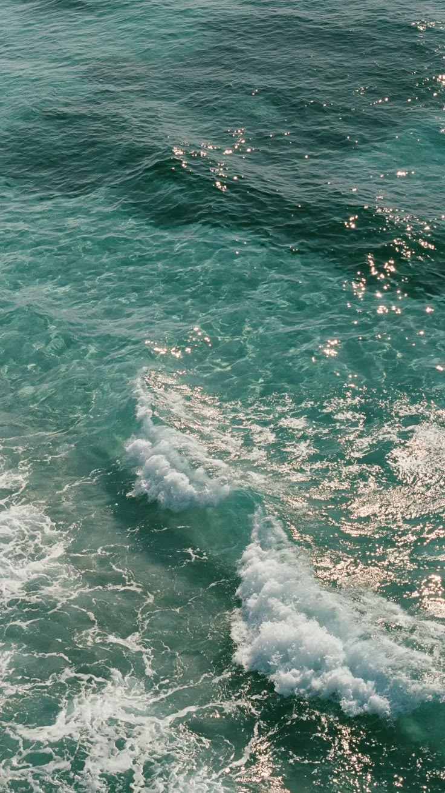
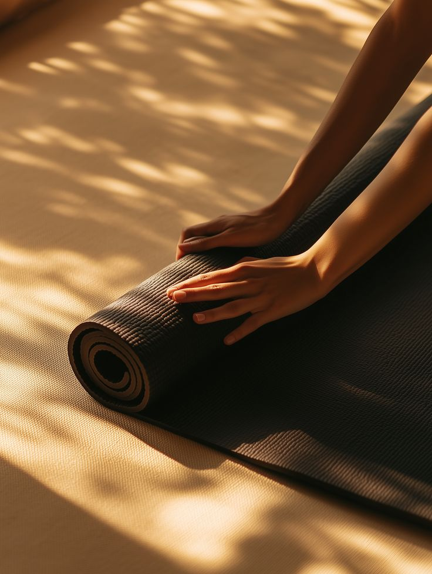
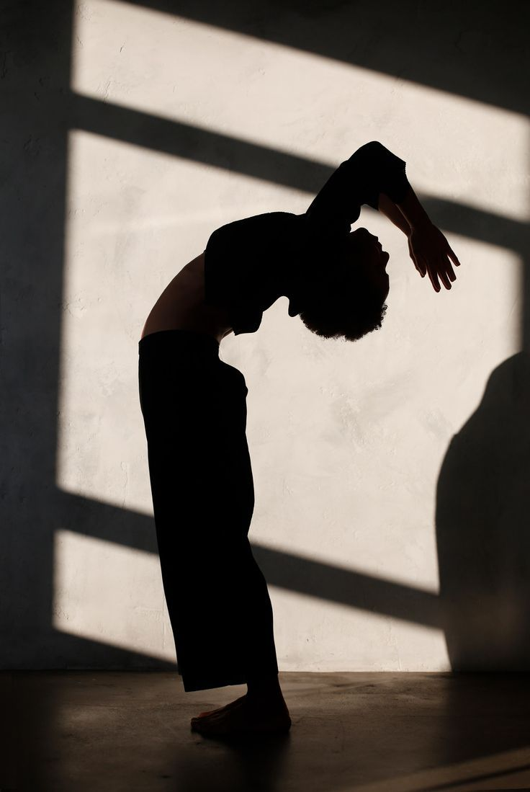
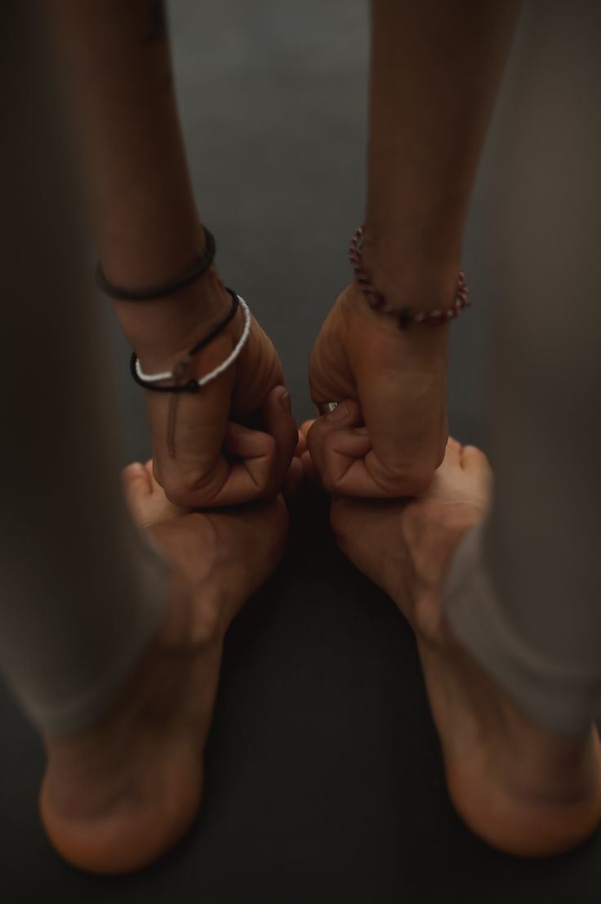
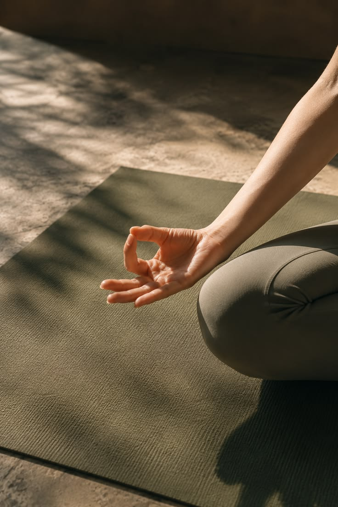
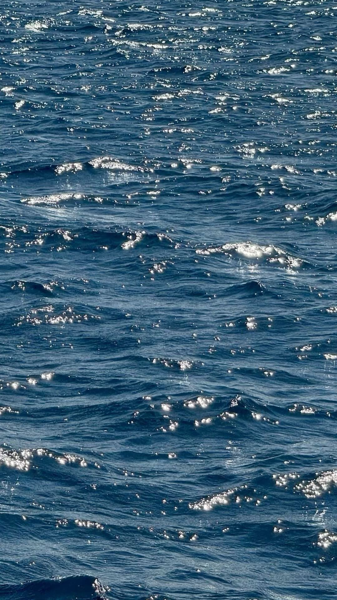
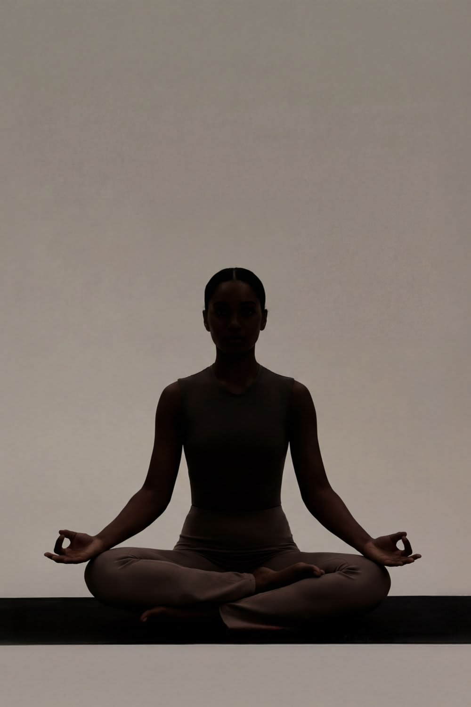

Hatha Yoga
Steady postures, clear alignment and an unhurried pace.
Ungasan · Bali
Daily classes, free practice and recovery at Kanana Village, Ungasan.
The academy
KnN Yoga Academy is a contemporary yoga space in the heart of Bali’s Bukit Peninsula, next to Garuda Wisnu Kencana — Indonesia’s tallest statue. With some of the island’s clearest turquoise-water beaches nearby, this is a natural place to combine focused practice, recovery and time outdoors.
The schedule brings together dynamic flows, slower restorative practice, flexibility-focused classes, meditation and sound. Yoga for Surfers focuses on mobility, control and recovery for the demands of surfing — a natural fit for one of the world’s leading surf destinations.
Part of Kanana Village — yoga, training, padel, food, work and recovery in one place.

Classes
Dynamic, technical or slow. Choose what works for the day.
Steady postures, clear alignment and an unhurried pace.
Active and passive work focused on practical flexibility.
Continuous sequences linking movement with a steady rhythm.
A structured, progressive sequence with a consistent tempo.
Longer-held floor poses and a slower way to finish the day.
A guided session built around attention and simple breath work.
A quiet listening session using resonance and acoustic instruments.
Movement paired with an easy, process-led creative practice.
Mobility, control and recovery for time in the water.



Weekly schedule
Open 8:00–19:00. Free practice is available between scheduled classes.
| Day | 08:00 | 10:00 | 17:00 |
|---|---|---|---|
| Monday | Hatha Yoga | Flexi Yoga | Yin Yoga |
| Tuesday | Vinyasa | Yoga for Surfers | Meditation |
| Wednesday | Ashtanga | Flexi Yoga | Sound Healing |
| Thursday | Hatha Yoga | Art Yoga | Yin Yoga |
| Friday | Vinyasa | Yoga for Surfers | Sound Healing |
| Saturday | Ashtanga | Flexi Yoga | Art Yoga |
| Sunday | Hatha Yoga | Meditation | Yin Yoga |
Passes
Choose yoga only or add the recovery area at Kanana Gym.
Single class
IDR 150,000
One scheduled yoga class.
Day pass
IDR 300,000
Yoga plus same-day access to the Kanana recovery area.
Weekly yoga pass
IDR 1,000,000
Yoga access for seven consecutive days.
Full weekly access
Weekly yoga + recovery
IDR 1,500,000
Seven days of yoga and recovery access.
Monthly yoga + recovery
IDR 2,000,000
Yoga and recovery access for one month.


Recovery at Kanana
Pair yoga with access to the recovery area at Kanana Gym. It is available with the Day Pass and combined weekly or monthly passes.

Daily in Ungasan
Move well.
Recover properly.
Get back outside.